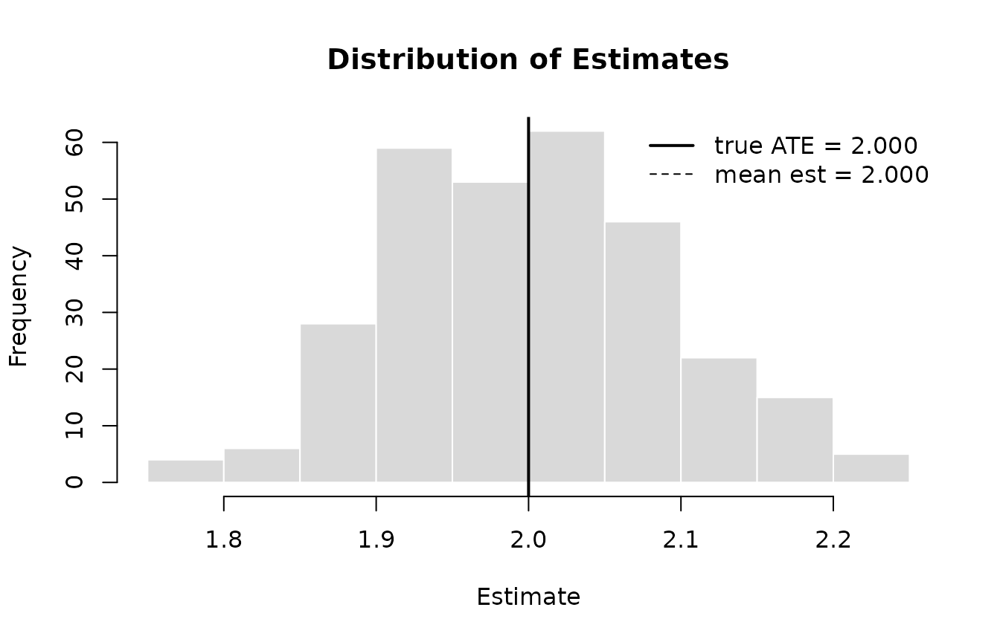

A Complete Simulation Study with causalsim
simulation-study.RmdOverview
Evaluating causal estimators requires knowing the answer.
causalsim gives you that by making the data-generating
process explicit: you specify the structural model, the package
simulates data from it, and you measure how well any estimator recovers
the truth you specified.
What this vignette covers
| Step | Function | What it does |
|---|---|---|
| 1 | causalsim_dgp() |
Define the structural model and true ATE |
| 2 | causalsim_draw() |
Simulate one dataset and inspect it |
| 3 | causalsim_eval() |
Measure estimator performance over many replications |
| 4 | causalsim_grid() |
Sweep over sample sizes and confounding levels |
library(causalsim)Step 1: Define the DGP
The structural model for this study is:
In causalsim_dgp() terms: one standard-normal
confounder, a constant effect of 2, moderate propensity confounding
(logistic coefficient 0.5), and a moderate baseline shift.
dgp <- causalsim_dgp(
n = 500,
n_confounders = 1,
effect = 2,
propensity = "moderate",
baseline = "moderate"
)
dgp
#> <causalsim_dgp>
#> n : 500
#> true ATE : 2.0000
#> heterogeneous: FALSE
#> sigma : 1.00
#> covariates :
#> W normal [confounder]The true ATE is exact when effect is a scalar — no Monte
Carlo approximation is needed. For function-valued effects,
causalsim_dgp() approximates the ATE via 10,000 Monte Carlo
draws at construction time.
Step 2: Inspect a Draw
causalsim_draw() simulates one dataset from the DGP. The
columns .tau and .p are the individual causal
effect and propensity score — diagnostic metadata that is not available
in real observational data.
dat <- causalsim_draw(dgp, seed = 1L)
head(dat)
#> W A Y .tau .p
#> 1 -0.6264538 0 -1.7679183 2 0.4223273
#> 2 0.1836433 0 -0.7538327 2 0.5229393
#> 3 -0.8356286 0 -1.6682940 2 0.3970399
#> 4 1.5952808 0 1.4649285 2 0.6894695
#> 5 0.3295078 1 0.8739842 2 0.5410956
#> 6 -0.8204684 0 -2.4452377 2 0.3988560With moderate confounding, the treated and control groups differ on the pre-treatment covariate:
aggregate(W ~ A, data = dat, FUN = mean)
#> A W
#> 1 0 -0.2440553
#> 2 1 0.3162376That difference is exactly what makes naive regression biased. Any
estimator that omits W will absorb part of its association
with Y into the treatment coefficient.
Step 3: Define Estimators
An estimator is any function that accepts the data frame returned by
causalsim_draw() and returns a named numeric vector. The
ci_lower and ci_upper fields are optional but
enable coverage and power metrics.
# Naive: regresses Y on A only — omits the confounder
naive_est <- function(data) {
fit <- lm(Y ~ A, data = data)
est <- coef(fit)[["A"]]
se <- sqrt(vcov(fit)["A", "A"])
c(estimate = est, ci_lower = est - 1.96 * se, ci_upper = est + 1.96 * se)
}
# OLS: adjusts for the observed confounder W
ols_est <- function(data) {
fit <- lm(Y ~ A + W, data = data)
est <- coef(fit)[["A"]]
se <- sqrt(vcov(fit)["A", "A"])
c(estimate = est, ci_lower = est - 1.96 * se, ci_upper = est + 1.96 * se)
}Named lists are also accepted, so the following is equivalent:
ols_est <- function(data) {
fit <- lm(Y ~ A + W, data = data)
ci <- confint(fit)["A", ]
list(
estimate = coef(fit)["A"],
ci_lower = ci[1],
ci_upper = ci[2]
)
}Step 4: Evaluate Each Estimator
causalsim_eval() runs reps independent
replications and returns a tidy summary of bias, RMSE, coverage, and
power with Monte Carlo standard errors.
eval_naive <- causalsim_eval(dgp, naive_est, reps = 300L, seed = 1L)
eval_naive
#> <causalsim_eval> reps: 300 true ATE: 2
#>
#> metric value se
#> bias 0.2353 0.00587
#> rmse 0.2562 0.00571
#> coverage 0.3700 0.02787
#> power 1.0000 0.00000
eval_ols <- causalsim_eval(dgp, ols_est, reps = 300L, seed = 1L)
eval_ols
#> <causalsim_eval> reps: 300 true ATE: 2
#>
#> metric value se
#> bias -0.0002 0.00529
#> rmse 0.0915 0.00338
#> coverage 0.9433 0.01335
#> power 1.0000 0.00000The naive estimator’s bias is substantial: treatment is positively correlated with , which also raises through the baseline, so the unadjusted coefficient absorbs part of that association. OLS eliminates the bias by conditioning on . Coverage for the naive estimator falls well below the nominal 95% because the confidence intervals are centered on the wrong value.
summary() adds the full distribution of per-replication
estimates, and plot() shows it as a histogram:
summary(eval_ols)
#> <causalsim_eval_summary> reps: 300 true ATE: 2
#>
#> Estimate distribution:
#> mean : 1.9998
#> sd : 0.0916
#> median: 2
#> [p10, p90]: [1.883, 2.1217]
#>
#> Metrics:
#> metric value se
#> bias -0.0002 0.00529
#> rmse 0.0915 0.00338
#> coverage 0.9433 0.01335
#> power 1.0000 0.00000
plot(eval_ols)
Distribution of OLS estimates over 300 replications. Solid line: true ATE. Dashed line: mean estimate.
Step 5: Vary Sample Size with causalsim_grid()
causalsim_grid() evaluates an estimator over the
Cartesian product of the supplied parameter values, returning a tidy
data frame of metrics for each cell. Here we vary n across
four levels to track how the OLS estimator’s precision improves with
more data.
grid_n <- causalsim_grid(
dgp = dgp,
estimator = ols_est,
vary = list(n = c(100L, 250L, 500L, 1000L)),
reps = 300L,
metrics = c("bias", "rmse"),
seed = 1L
)
grid_n
#> <causalsim_grid> 4 cells vary: n reps/cell: 300
#> metrics: bias, rmse
#>
#> n metric value se
#> 100 bias -0.018028707 0.012266598
#> 100 rmse 0.212874118 0.009119602
#> 250 bias 0.014982725 0.007414731
#> 250 rmse 0.129085151 0.004892668
#> 500 bias 0.003375758 0.005195662
#> 500 rmse 0.089904798 0.003940619
#> 1000 bias 0.003163125 0.003734224
#> 1000 rmse 0.064648194 0.002489179RMSE roughly halves as quadruples — consistent with -rate convergence for OLS in a correctly specified model. Bias stays near zero at every sample size.
Step 6: Vary Confounding Strength
Varying the propensity preset shows how bias scales with
confounding. Because causalsim_grid() accepts one estimator
at a time, we run it separately and combine the results.
conf_levels <- list(propensity = c("low", "moderate", "high"))
grid_naive <- causalsim_grid(dgp, naive_est,
vary = conf_levels,
reps = 300L,
metrics = "bias",
seed = 1L)
grid_ols <- causalsim_grid(dgp, ols_est,
vary = conf_levels,
reps = 300L,
metrics = "bias",
seed = 1L)
comparison <- rbind(
cbind(estimator = "naive", grid_naive$results),
cbind(estimator = "ols", grid_ols$results)
)
comparison <- comparison[order(comparison$propensity, comparison$estimator), ]
rownames(comparison) <- NULL
comparison
#> estimator propensity metric value se
#> 1 naive high bias 0.4089432973 0.006098827
#> 2 ols high bias -0.0001855971 0.005888572
#> 3 naive low bias 0.1305019380 0.005990692
#> 4 ols low bias 0.0045047637 0.005556133
#> 5 naive moderate bias 0.2419929827 0.005443921
#> 6 ols moderate bias -0.0008346139 0.005360097Naive bias grows proportionally with confounding strength. OLS remains near zero across all three levels because is observed and included in the model.
Where to go next
This workflow — define, evaluate, grid — scales to more complex settings. A few directions:
| Goal | How |
|---|---|
| Heterogeneous effects | Pass a function to effect in
causalsim_dgp()
|
| Non-normal covariates | Use covar("binary") or covar("uniform") in
covariates
|
| Multiple confounders | Set n_confounders = 3 or pass named
covariates
|
| Custom covariate structure | Mix n_confounders with explicit
covariates = list(...)
|
See ?causalsim_dgp and ?covar for the full
API.
Session info
sessionInfo()
#> R version 4.6.0 (2026-04-24)
#> Platform: x86_64-pc-linux-gnu
#> Running under: Ubuntu 24.04.4 LTS
#>
#> Matrix products: default
#> BLAS: /usr/lib/x86_64-linux-gnu/openblas-pthread/libblas.so.3
#> LAPACK: /usr/lib/x86_64-linux-gnu/openblas-pthread/libopenblasp-r0.3.26.so; LAPACK version 3.12.0
#>
#> locale:
#> [1] LC_CTYPE=C.UTF-8 LC_NUMERIC=C LC_TIME=C.UTF-8
#> [4] LC_COLLATE=C.UTF-8 LC_MONETARY=C.UTF-8 LC_MESSAGES=C.UTF-8
#> [7] LC_PAPER=C.UTF-8 LC_NAME=C LC_ADDRESS=C
#> [10] LC_TELEPHONE=C LC_MEASUREMENT=C.UTF-8 LC_IDENTIFICATION=C
#>
#> time zone: UTC
#> tzcode source: system (glibc)
#>
#> attached base packages:
#> [1] stats graphics grDevices utils datasets methods base
#>
#> other attached packages:
#> [1] causalsim_0.0.0.9000
#>
#> loaded via a namespace (and not attached):
#> [1] digest_0.6.39 desc_1.4.3 R6_2.6.1 fastmap_1.2.0
#> [5] xfun_0.57 cachem_1.1.0 knitr_1.51 htmltools_0.5.9
#> [9] rmarkdown_2.31 lifecycle_1.0.5 cli_3.6.6 sass_0.4.10
#> [13] pkgdown_2.2.0 textshaping_1.0.5 jquerylib_0.1.4 systemfonts_1.3.2
#> [17] compiler_4.6.0 tools_4.6.0 ragg_1.5.2 evaluate_1.0.5
#> [21] bslib_0.10.0 yaml_2.3.12 jsonlite_2.0.0 rlang_1.2.0
#> [25] fs_2.1.0